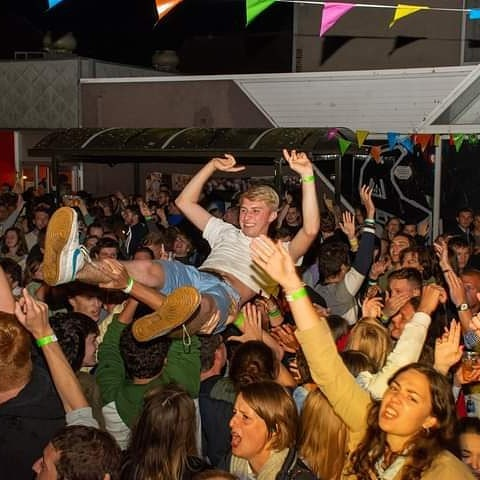

Welkom op de officiële website van Huts in Gits! Maak je klaar voor een onvergetelijke muzikale ervaring vol humor, energie en meezingklassiekers. Met zijn unieke stijl en interactie met het publiek weet Huts in Gits elk optreden om te toveren tot een feest waar je nog lang over praat.
Een Show die Blijft Hangen
Huts in Gits staat bekend om zijn verrassende mix van grappige nummers en bekende hits, perfect om iedereen in de feeststemming te brengen. Zijn optredens bruisen van de energie, en zijn vermogen om contact te maken met het publiek zorgt voor een onvergetelijke sfeer.
Hoogtepunten
Huts in Gits heeft zijn stempel gedrukt op diverse evenementen, zoals de legendarische 50 dagen show in Roeselare, waar hij een volle zaal op zijn kop zette. Zijn sets zijn een combinatie van muzikale creativiteit en pure gezelligheid.
Beleef het Zelf
Of je nu een intiem feestje organiseert of een groots evenement plant, Huts in Gits brengt gegarandeerd sfeer en plezier. Klaar om jouw publiek aan het dansen te krijgen? Boek nu en ervaar het zelf!